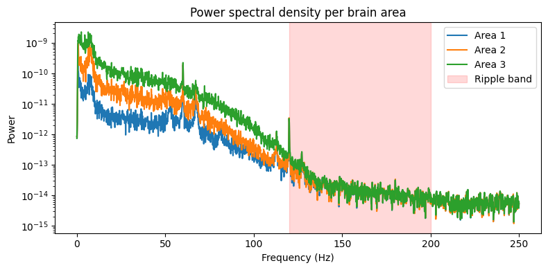
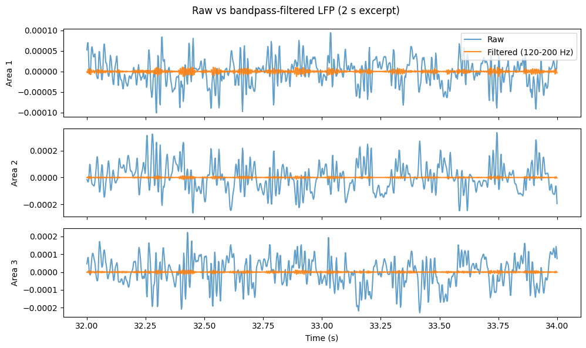
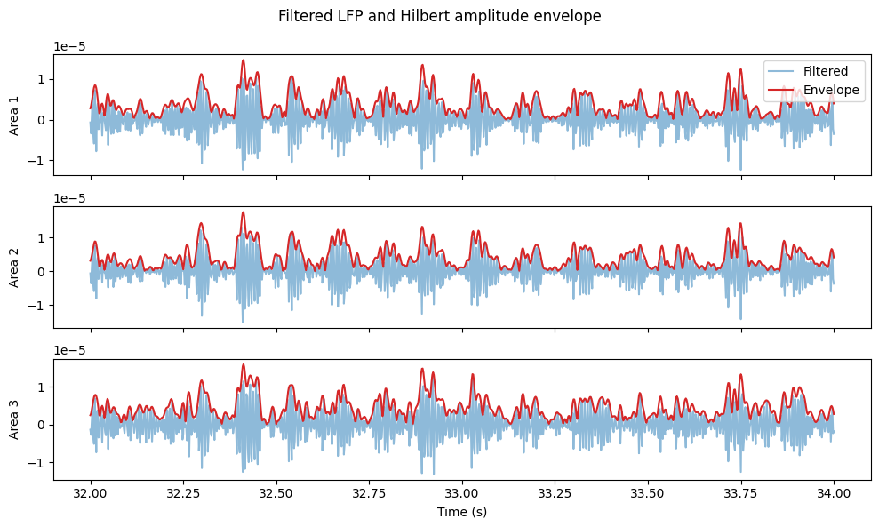
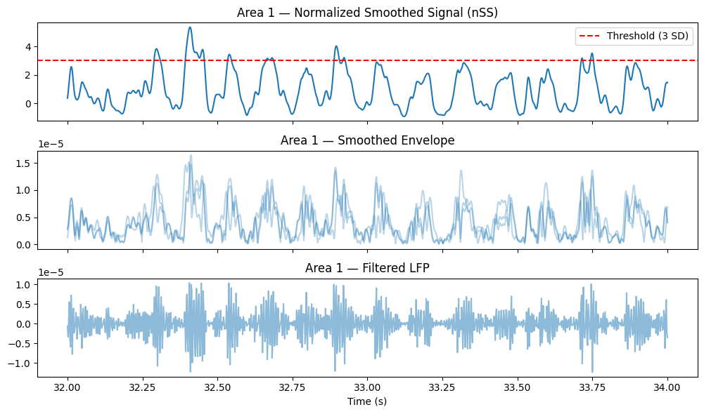
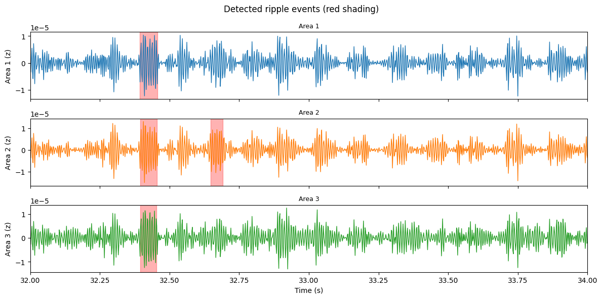

Question 1: Ripple Density per Brain Area#
Which brain area (if any) has the highest density of ripples (i.e. “hippocampal” ripples traditionally occurring during sharp wave-ripples)?
Approach#
We detect ripple events in the LFP signal for each brain area by bandpass filtering (80–150 Hz), computing the Hilbert amplitude envelope, z-scoring, and thresholding. We demonstrate the full pipeline on dataset 15.
Setup#
%matplotlib inline
from pynwb import NWBHDF5IO
from dandi.dandiapi import DandiAPIClient
import lindi
import pynapple as nap
from matplotlib import pyplot as plt
import numpy as np
from scipy.signal import hilbert, windows
dandiset_id = "218201"
dataset_num = 15
Load LFP#
filepath = f"sub-mouse-{dataset_num}/sub-mouse-{dataset_num}_ses-None_ecephys.nwb"
with DandiAPIClient(api_url="https://api.sandbox.dandiarchive.org/api") as client:
asset = client.get_dandiset(dandiset_id, "draft").get_asset_by_path(filepath)
s3_url = asset.get_content_url(follow_redirects=1, strip_query=True)
f = lindi.LindiH5pyFile.from_hdf5_file(s3_url, local_cache=lindi.LocalCache())
io = NWBHDF5IO(file=f)
data = nap.NWBFile(io.read())
print(data)
-
┍━━━━━━━━━━━━┯━━━━━━━━━━━━━┑
│ Keys │ Type │
┝━━━━━━━━━━━━┿━━━━━━━━━━━━━┥
│ units │ TsGroup │
│ trials │ IntervalSet │
│ lfp_area_3 │ TsdFrame │
│ lfp_area_2 │ TsdFrame │
│ lfp_area_1 │ TsdFrame │
┕━━━━━━━━━━━━┷━━━━━━━━━━━━━┙
We extract the LFP data for each brain area, restricting to the first 60 seconds for computational efficiency.
lfps = {
1: data['lfp_area_1'].get(0, 60),
2: data['lfp_area_2'].get(0, 60),
3: data['lfp_area_3'].get(0, 60)
}
print(lfps[1])
Time (s) 0 1 2 3 4 ...
---------- ------------ ------------ ------------ ------------ ------------ -----
0.0 1.01842e-06 -2.76704e-06 -2.72918e-06 -2.69732e-06 -2.20791e-06 ...
0.002 1.62122e-06 1.21473e-05 8.38553e-06 2.03392e-05 2.40002e-05 ...
0.004 -1.32134e-05 1.70601e-05 -5.10628e-06 3.41417e-05 2.60855e-05 ...
0.006 -7.38346e-06 2.25387e-05 -6.07331e-07 4.16353e-05 3.34216e-05 ...
0.008 -1.13154e-05 1.77161e-05 -5.27619e-06 3.64317e-05 2.95742e-05 ...
0.01 -1.35732e-05 1.38347e-05 -7.44804e-06 3.01003e-05 2.6992e-05 ...
0.012 -1.95179e-05 1.16861e-05 -1.47534e-05 2.43641e-05 2.08411e-05 ...
... ...
59.988 -2.1131e-05 -1.17435e-05 -2.02544e-05 -1.26727e-05 -1.74906e-05 ...
59.99 -1.60555e-05 -5.82269e-06 -1.51106e-05 -4.71645e-06 -1.32929e-05 ...
59.992 -7.7853e-06 2.48876e-06 -6.27886e-06 6.16834e-06 -4.71455e-06 ...
59.994 -3.53964e-06 4.44772e-06 -2.82386e-06 8.87235e-06 -1.63292e-06 ...
59.996 -3.37667e-06 1.38496e-06 -4.59271e-06 4.6371e-06 -5.00833e-06 ...
59.998 -2.35265e-06 6.38495e-07 -4.51102e-06 3.68345e-06 -6.25199e-06 ...
60.0 -5.10354e-07 2.43311e-06 -1.22484e-06 8.51992e-06 -1.79666e-06 ...
dtype: float64, shape: (30001, 10)
Power spectral density per brain area#
We compute the power spectral density and identify the 3 channels with the highest ripple-band power (120–200 Hz) per area to reduce computational load.
powers = {}
ripple_powers = {}
for area in [1, 2, 3]:
powers[area] = nap.compute_mean_power_spectral_density(lfps[area], 10, fs=500, ep=nap.IntervalSet(0, 60))
ripple_powers[area] = powers[area].loc[120:200].sum(0)
fig, ax = plt.subplots(figsize=(8, 4))
for area in [1, 2, 3]:
ax.semilogy(powers[area].index, powers[area].mean(1), label=f"Area {area}")
ax.axvspan(120, 200, alpha=0.15, color="red", label="Ripple band")
ax.set_xlabel("Frequency (Hz)")
ax.set_ylabel("Power")
ax.set_title("Power spectral density per brain area")
ax.legend()
plt.tight_layout()
plt.show()

Select best channels and bandpass filter#
We keep the 3 channels with highest ripple-band power per area and apply a bandpass filter (120–200 Hz).
flfps = {}
for area in [1, 2, 3]:
best_channels = ripple_powers[area].sort_values().index[-3:].values
flfps[area] = nap.apply_bandpass_filter(lfps[area][:, best_channels], cutoff=(120, 200), fs=500)
ep = nap.IntervalSet(32, 34)
fig, axes = plt.subplots(3, 1, figsize=(10, 6), sharex=True)
for i, area in enumerate([1, 2, 3]):
axes[i].plot(lfps[area].restrict(ep).t, lfps[area].restrict(ep)[:, 0], label="Raw", alpha=0.7)
axes[i].plot(flfps[area].restrict(ep).t, flfps[area].restrict(ep)[:, 0], label="Filtered (120-200 Hz)", alpha=0.9)
axes[i].set_ylabel(f"Area {area}")
if i == 0:
axes[i].legend(loc="upper right")
axes[-1].set_xlabel("Time (s)")
fig.suptitle("Raw vs bandpass-filtered LFP (2 s excerpt)")
plt.tight_layout()
plt.show()

Hilbert transform — amplitude envelope#
We compute the Hilbert transform of the filtered LFP to extract the amplitude envelope, which reflects ripple strength over time. We plot the envelope alongside the filtered signal for visual confirmation.
envelopes = {}
for area in [1, 2, 3]:
analytic_signal = hilbert(flfps[area].values, axis=0)
envelopes[area] = nap.TsdFrame(
t=flfps[area].t, d=np.abs(analytic_signal), columns=flfps[area].columns
)
fig, axes = plt.subplots(3, 1, figsize=(10, 6), sharex=True)
for i, area in enumerate([1, 2, 3]):
axes[i].plot(flfps[area][:,0].restrict(ep), alpha=0.5, label="Filtered")
axes[i].plot(envelopes[area][:,0].restrict(ep), color="C3", label="Envelope")
axes[i].set_ylabel(f"Area {area}")
if i == 0:
axes[i].legend(loc="upper right")
axes[-1].set_xlabel("Time (s)")
fig.suptitle("Filtered LFP and Hilbert amplitude envelope")
plt.tight_layout()
plt.show()

Smooth and z-score#
We smooth the envelope with a moving average and z-score across time, then average across channels within each area.
nSS = {} # Normalized Smoothed Signal
for area in [1, 2, 3]:
smoothed = envelopes[area].convolve(np.ones(7) / 7)
z = (smoothed - smoothed.mean(0)) / smoothed.std(0)
nSS[area] = z.mean(1) # average across channels -> Tsd
area = 1
fig, axes = plt.subplots(3, 1, figsize=(10, 6), sharex=True)
axes[0].plot(nSS[area].restrict(ep), color="C0")
axes[0].axhline(3, color="red", linestyle="--", label="Threshold (3 SD)")
axes[0].set_title(f"Area {area} — Normalized Smoothed Signal (nSS)")
axes[0].legend()
axes[1].plot(envelopes[area].restrict(ep), color="C0", alpha=0.3, label="Envelope")
axes[1].set_title(f"Area {area} — Smoothed Envelope")
axes[2].plot(flfps[area].restrict(ep)[:,0], color="C0", alpha=0.5, label="Filtered LFP")
axes[2].set_title(f"Area {area} — Filtered LFP")
axes[-1].set_xlabel("Time (s)")
plt.tight_layout()
plt.show()

Ripple detection#
We detect ripple events by thresholding the nSS signal above 3 standard deviations We further filter detected events to keep only those between 30 ms and 300 ms in duration, which are typical for hippocampal ripples. Finally, we plot the detected ripple events on top of the filtered LFP signal for visual confirmation.
ripples = {}
for area in [1, 2, 3]:
ripple_events = nSS[area].threshold(3, method="above")
ripple_ep = ripple_events.time_support
ripple_ep = ripple_ep.drop_short_intervals(0.03, time_units="s")
ripple_ep = ripple_ep.drop_long_intervals(0.3, time_units="s")
ripples[area] = ripple_ep
# Plot detected ripples on filtered LFP
fig, axes = plt.subplots(3, 1, figsize=(12, 6), sharex=True)
for i, area in enumerate([1, 2, 3]):
axes[i].plot(flfps[area].restrict(ep)[:,0], color=f"C{i}", linewidth=1)
for _, row in ripples[area].as_dataframe().iterrows():
axes[i].axvspan(row["start"], row["end"], alpha=0.3, color="red")
axes[i].set_ylabel(f"Area {area} (z)")
axes[i].set_title(f"Area {area}", fontsize=9)
axes[i].set_xlim(ep.start[0], ep.end[0])
axes[-1].set_xlabel("Time (s)")
fig.suptitle("Detected ripple events (red shading)")
plt.tight_layout()
plt.show()

Ripple density#
recording_duration = lfps[1].time_support.tot_length("s")
for area in [1, 2, 3]:
density = len(ripples[area]) / recording_duration
print(f"Area {area}: {len(ripples[area])} ripples — {density:.4f} ripples/s")
Area 1: 11 ripples — 0.0028 ripples/s
Area 2: 13 ripples — 0.0033 ripples/s
Area 3: 6 ripples — 0.0015 ripples/s
Answer#
densities = {area: len(ripples[area]) / recording_duration for area in [1, 2, 3]}
best_area = max(densities, key=densities.get)
print(f"Brain area {best_area} has the highest ripple density ({densities[best_area]:.4f} ripples/s) in dataset {dataset_num}.")
Brain area 2 has the highest ripple density (0.0033 ripples/s) in dataset 15.